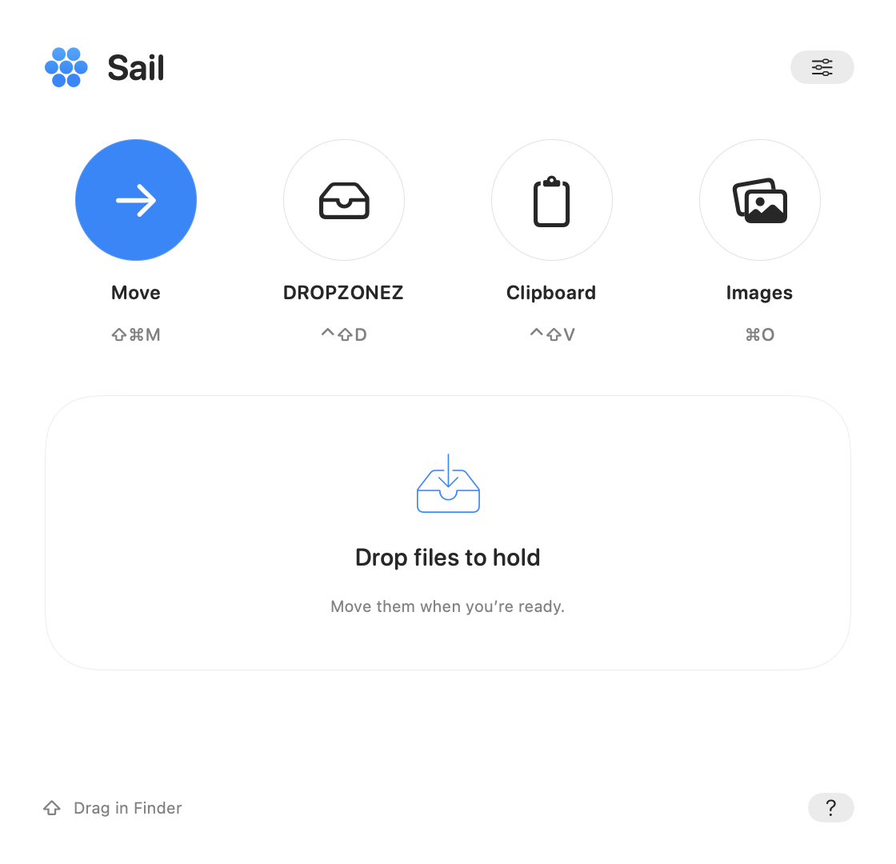

Move the original.
Choose files or folders and their destination. Confirm Move here. Duplicate names get a number, so existing items stay intact.
Move originals, keep files ready for later, and find the text you just copied. Sail stays close in your menu bar.
Free. No ads or in-app purchases.
Coming to the App Store as Sail: Move my files.

Open Sail from the menu bar, or use the file wheel while you drag in Finder.
Choose files or folders and their destination. Confirm Move here. Duplicate names get a number, so existing items stay intact.
Keep file and folder references together until you need them. Then choose a favorite folder or drag Move out to a Finder folder. Holding leaves originals in place.
Control + Shift + D
Enable text history, then copy as usual. Search your latest five distinct clips, edit a working copy, and copy it back. Pause whenever you need.
Control + Shift + V
Convert to PNG, JPEG or supported HEIC. Resize proportionally. Image tools appear for images, and each result is a new copy.
Open With lets you choose a Mac app for your files. Share opens the system picker. Sail’s global shortcuts work while it runs, even when its windows are closed.
Clipboard history starts off. Enable it when you are ready. A capture indicator, Pause and Revoke consent keep its state visible.
Retained clips stay in local preferences without added app encryption. Backups may include them. Turn retention off for session-only history, or Clear history to remove clips. Pause before copying secrets.
Sail has no account or file-upload service. This release does not collect usage analytics. Services you choose through Share or Open With have their own practices.
Read the privacy notice